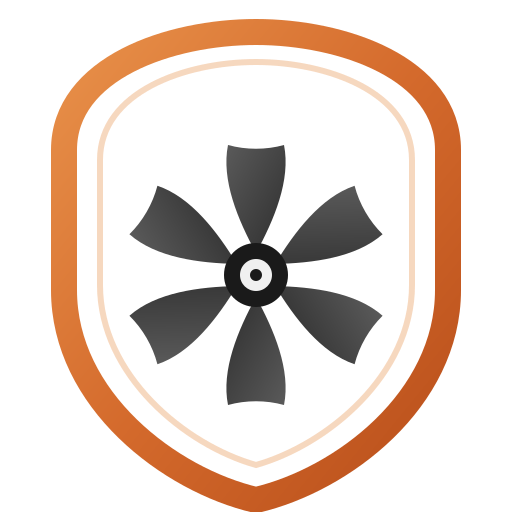
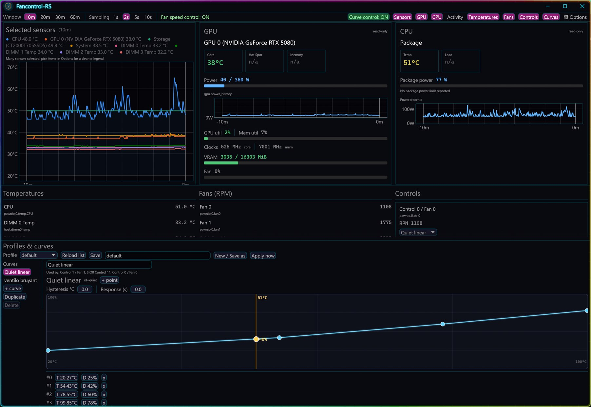
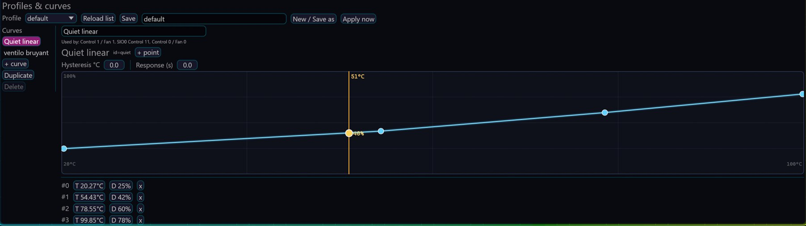
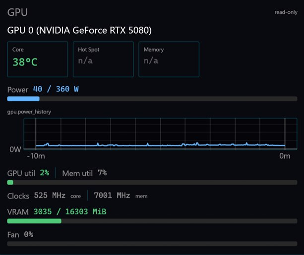
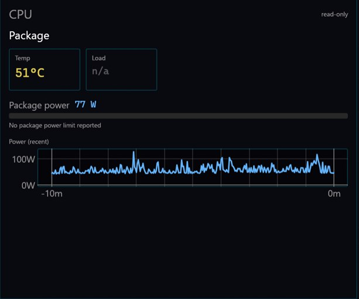

Fancontrol-RS
Windows fan control and monitoring for GPU, CPU and RAM activity, written in Rust. PawnIO only, no WinRing0. Curves, profiles, AIO fans on motherboard headers.
Some color for the autumn
A neon look, fan curves that can follow several sensors, a leaner Rust core, and every v0.6.2 fix. Prefer the classic look? Options > Theme.
Only signed PawnIO modules for Super I/O and EC access. Never WinRing0.

Live graph, GPU / CPU panels, Activity deckWhat it does
Curves that follow the hottest sensor
Curves, profiles, live duty sliders, multi-sensor temperature graph. A curve can follow the hottest of several sensors (CPU, GPU, SSD). Case fans and AIO fans on motherboard headers (not a pump/RGB vendor app).

What is heating your PC
CPU load history and top processes (CPU % and RAM), filterable and sortable. Toggle from the top bar or Options.
NVIDIA multi-metric
Fixed-path nvidia-smi: temp, power, util, clocks, VRAM.

Package power, DIMMs, SSDs
CPU package watts, optional DDR5 DIMM temps, SSD/NVMe via native DeviceIoControl (no PowerShell).

egui app with a Neon theme by default, light and dark themes, Windows fonts, system tray, first-run write consent.
When PawnIO needs elevation, a Restart as Administrator button shows the Windows UAC prompt (no silent elevation).
No vulnerable ring-0 drivers. Ever.
PawnIO only for Super I/O / EC access. Never ships WinRing0 or other known-vulnerable ring-0 drivers.
Scriptable diagnostics
> fancontrol-rs sample > fancontrol-rs list-sensors > fancontrol-rs list-controls > fancontrol-rs test-duty > fancontrol-rs sample-storage
Motherboard support
Every desktop board with a Super I/O / EC HWM path should work in principle: broad chip coverage (Nuvoton NCT668x, banked NCT679x, ITE IT87, and friends) is the goal via PawnIO. Boards are only marked certified once someone has actually sent logs.
Tested on real hardware
Full read + PWM write on maintainer hardware.
Got another board?
ASUS, MSI, Gigabyte, ASRock and more. Run detect + list-sensors + list-controls and open a hardware report.
Signing & distribution
fancontrol-rs does not phone home, does not poll for new versions in the background, and never downloads or installs updates by itself. The only optional network call is the in-app Check for updates button (Options): you click it, it queries GitHub's public Releases API, and shows a link if something newer exists. You decide when to upgrade.
Fixed-path nvidia-smi for GPU metrics, native storage IOCTLs for SSD/NVMe temps, and (when elevated with PawnIO) CPU package power via MSR modules. No PowerShell, no WMI for those paths.
Built in CI, SHA256 published
Release binaries are built on windows-latest in GitHub Actions and published with a SHA256 checksum. They are not code-signed yet, so expect SmartScreen and occasional Defender heuristics, the same class of warning most tools that talk to Super I/O / EC hardware get.
Applying for free code signing from the SignPath Foundation
SignPath Foundation provides free Authenticode signing for qualifying open-source projects. fancontrol-rs meets the OSS licensing, active-maintenance, and no-telemetry criteria and is applying for coverage. See docs/SIGNING_AND_DISTRIBUTION.md for the full signing plan. This page will be updated with the standard SignPath attribution once a certificate is issued.